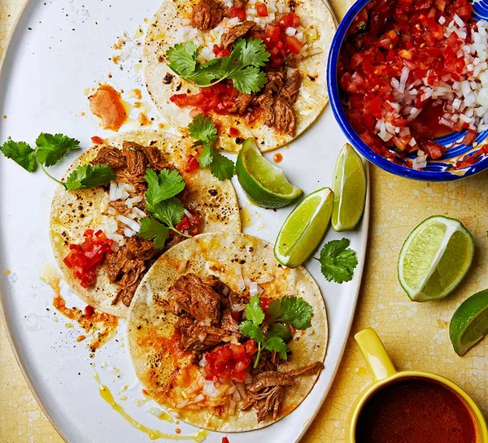

Birria Tacos

Description
Birria is traditionally a spicy and super savory Mexican beef or goat stew that's slow cooked until the meat is tender and fall-apart juicy and delicious.
Someone had the amazing idea to stuff this meaty goodness into a taco shell, and then dip the whole thing into the stew and fry it up
Ingredients
- 1 tbsp sunflower oil
- 1½ kg braising steak, cut into 15cm cubes
- 4 guajillo chillies
- 1 large ancho chilli
- 4 arbol chillies
- 2 medium tomatoes, cut in half
- 1 medium onion, quartered
- 2 garlic cloves
- ½ tsp dried oregano
- ½ tsp ground cumin
- ½ tsp ground cinnamon
- ½ tsp ground ginger
- 2 cloves
- 3 black peppercorns
- 1 tsp white wine vinegar
- 2 bone marrow discs
- 15g sea salt flakes
- 2 bay leaves
Steps
- Heat the oil in a large, heavy- based, ovenproof saucepan over a medium-high heat and brown the braising steak all over, about 8-10 mins. Set aside.
- Heat a frying pan over a medium heat and toast the guajillo and ancho chillies for 2 mins, making sure not to burn them. If you want the birria to be spicy, add the arbol chillies. Transfer to a lidded saucepan with the tomatoes and onion. Peel the garlic and add this, too. Add 500ml water, cover, bring to the boil, then reduce the heat to a simmer and cook for 5 mins. Turn the heat off and set aside to cool.
- Transfer the tomatoes, onion and chillies to a blender, reserving the cooking liquor. Add the spices, vinegar and 2 tbsp of the cooking liquor to the blender, then blend until smooth. Heat the oven to 140C/120C fan/gas 1.
- Put the meat back over a medium heat, then add the bone marrow, salt and bay leaves. Pass the blended chilli sauce through a sieve into the pan to ensure it's silky smooth. Pour in 1 litre water and the remaining cooking liquor. Cover and transfer to the oven for 3 hrs until the meat is tender and falling apart. After 1 hr 30 mins, season to taste.
- Remove the meat from the broth using a slotted spoon, transfer to a board and shred using two forks. The broth should have thickened.
- To serve, put shredded beef in a bowl, pour over the broth, then garnish with the coriander, onion and spicy salsa. Serve with limes on the side for squeezing over. Or, heat a corn tortilla, add some shredded birria beef and garnish with the coriander, onion and a squeeze of lime, and serve the broth on the side in a small cup. To make a quesabirria, heat a corn tortilla, add some grated mozzarella cheese and some of the beef. Once the cheese has melted, pour 1 tbsp of the broth under and over the tortilla, and serve more broth on the side.